1과목: 일반화학
1. 화학평형에 대한 다음 설명 중 옳은 것은?
2. 에틸알콜(C2H5OH)의 융해열 4.81kJ/mol이라고 할 때 이 알콜 8.72g을 얼렸을 때의 △H는 약 몇 kJ인가?
3. 다음 유기화합물의 명명이 잘못된 것은?
4. 아연-구리 전지에 대한 설명 중 틀린 것은?
5. 다음 중 무기화합물에 해당하는 것은?
6. 16.0M인 H2SO4 용액 8.00mL를 용액의 최종부피가 0.125L가 될 때까지 묽혔다면 묽힌 후 용액의 몰농도는 약 얼마가 되겠는가?
7. 3.5몰의 물을 전기분해하면 산소기체(O2) 몇 g이 생성되겠는가?
8. 17Cl의 전자배치를 옳게 나타낸 것은?
9. 주기율표상에서 나트륨(Na)부터 염소(Cl)에 이르는 3주기 원소들의 경향성을 옳게 설명한 것은?
10. 산성비의 발생과 가장 관계가 없는 반응은?
11. 다음 반응에서 HCO3- 이온은 어떤 작용을 하는가?
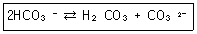
12. 노르말 알케인(normal alkane)의 일반식은?
13. 벤젠을 실험식으로 옳게 나타낸 것은?
14. 산과 염기에 대한 설명으로 옳은 것은?
15. 백금 원자 1개의 질량은 몇 g인가? (단, 백금의 원자량은 195.09g/mol이다.)
16. 몰(mole)에 대한 설명으로 틀린 것은?
17. 일정한 온도와 압력에서 진행되는 다음 연소반응에 관련된 내용을 틀리게 설명한 것은?
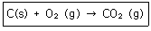
18. 3.0M AgNO3 200mL를 0.9M CuCl2 350mL에 가해졌을 때, 생성되는 AgCl(분자량=143g)의 양은?
19. 부탄이 공기 중에서 완전 연소하는 화학 반응식은 다음과 같다. 괄호 안에 들어갈 계수들 중 a의 값은 얼마인가?
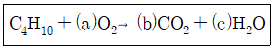
20. 주어진 온도에서 N2O4(g)⇄2NO2(g)의 계가 평형상태에 있다. 이 때 계의 압력을 증가시키면 반응이 어떻게 진행되겠는가?
2과목: 분석화학
21. 진한 염산에 HCl(분자량 36.46)이 무게비로 37.0wt% 있다. 이 염산의 밀도가 1.19g/mL 라면 몰 농도는 약 얼마인가?
22. KH2PO4와 KOH로 구성된 혼합용액의 전하균형식으로 옳은 것은?
23. 요로드화 반응에 대한 설명 중 틀린 것은?
24. 표준 수소 전극에서의 반응 및 표준 전위(E°)를 가장 옳게 나타낸 것은?
25. 다음 수용액들의 농도는 모두 0.1M이다. 이온세기(ionic strength)가 가장 큰 것은?
26. 25℃에서 0.⑤0M 트리메틸아민(Trimethylamine) 수용액의 pH는 얼마인가? (단, 25℃에서 (CH3)3NH+의 Ka 값은 1.58×10-10이다.)
27. 무게분석법에서 결정을 성장시키는 방법으로 틀린 것은?
28. 침전적정에서 종말점을 검출하는 데 일반적으로 사용하는 방법이 아닌 것은?
29. Fe3+을 포함하는 시료 10mL를 0.02M EDTA 20mL와 반응시켰다. 이 때 Fe3+는 모두 착물을 형성했고 EDTA는 과량으로 남게 된다. 과량의 EDTA는 0.⑤M Mg2+ 용액 3mL로 역적정하였다. 원래 시료 용액 중에 있는 Fe3+의 몰농도는?
30. 활동도계수의 특성에 대한 설명으로 가장 거리가 먼 것은?
31. pH 10인 완충 용액에서 0.0360 M Ca2+ 용액 50.0mL를 0.0720M EDTA로 적정할 경우에 당량점에서의 칼슘 이온의 농도 [Ca2+]는 얼마인가? (단, 조건 형성 상수(conditional formation constant) Kㆍf값은 1.34×1010이다.)
32. 다음 반응에 대한 화학평형상수 K를 옳게 나타낸 것은?
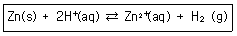
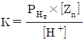
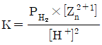
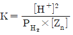
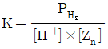
33. 다음 평형반응에 대한 Kb는 얼마인가? (단, HCN의 Ka의 값은 6.20×10-10이다.)
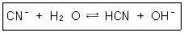
34. Mn2+가 들어 있는 시료용액 50mL를 0.1 M EDTA 용액 100mL와 반응시켰다. 모든 Mn2+와 반응하고 남은 여분의 EDTA를 금속지시약을 사용하여 0.1M Mg2+ 용액으로 적정하였더니 당량점까지 50mL가 소비되었다. 시료용액에 들어있는 Mn2+의 농도는 몇 M인가?
35. 강산이나 강염기로만 되어 있는 것은?
36. F-는 Al3+에는 가리움제(masking agent)로 작용하지만 Mg2+에는 반응하지 않는다. 어떤 미지시료에 Mg2+와 Al3+이 혼합되어 있다. 이 미지시료 20.0mL를 0.0800M EDTA로 적정하였을 때 50.0mL가 소모되었다. 같은 미지시료를 새로 20.0mL 취하여 충분한 농도의 KF를 5.00mL 가한 후 0.0800M EDTA로 적정하였을 때는 30.0mL가 소모되었다. 미지시료 중의 Al3+ 농도는?
37. 0.01M 염산 수용액의 pH는?
38. 산화-환원 지시약의 색깔이 변하는 전위 범위는? (단, n은 반응에 참여하는 전자의 수이다.)
39. 다음 중 단위를 잘못 나타낸 것은?
40. 미지시료 내의 특정 물질의 양을 분석하는 방법으로 적정이 사용된다. 적정의 요건으로 틀린 것은?
3과목: 기기분석I
41. 유기분자의 구조 및 작용기에 대한 정보를 적외선(IR)흡수 분광스펙트럼으로부터 얻을 수 있다. 적외선 흡수분광법에 대한 설명으로 틀린 것은?
42. ICP(유도결합플라즈마) 분광법에서 통상 사용되는 토치는 보통 3가지의 도입이 일어나는 관으로 구성된다. 다음 중 그 구성이 아닌 것은?
43. X-선 회절기기에서 토파즈(격차간격 d=1.356Å)가 회절 결정으로 사용되는 경우 Ag의 Ka1선인 0.497Å을 관찰하기 위해서는 측각기(goniometer) 각도를 몇 도에 맞추어야 하는가? (단, 2θ 값을 계산한다.)
44. 들뜬 단일항 상태와 들뜬 삼중항 상태에 대한 설명 중 틀린 것은?
45. Lambert-Beer 법칙을 나타내는 다음 수식(A=εbc)의 각 요소에 대한 설명 중 틀린 것은?
46. 기기 부분장치의 표면에서 생기는 산란과 반사에 의해 주로 발생하는 떠돌이 빛(stray light)은 Beer의 법칙에서 어긋나는 요인이 된다. 떠돌이 빛에 의한 영향으로 옳은 것은?
47. 전형적인 분광기기의 구성장치가 아닌 것은?
48. 원자흡수 분광법을 이용하여 특별하게 수은(Hg)을 정량하는 데 사용되는 가장 적합한 방법은?
49. 불꽃을 사용하는 원자화 장치에서 공기-아세틸렌가스 대신 산화이질소-아세틸렌가스를 사용하게 되면 주로 어떤 효과가 기대되는가?
50. 원자분광법의 시료도입방법 중 고체시료에 전처리 없이 직접 사용할 수 있는 방법은?
51. 적외선 흡수분광법에서 지문영역은?
52. 유도결합플라즈마 광원인 토치(torch)의 불꽃에서 운도 분포를 적절하게 나타낸 것은?
53. 여러 가지의 전자전이가 일어날 때 흡수하는 에너지(△E)가 가장 작은 것은?
54. 다이아몬드 기구에 의해 많은 수의 평행하고 조밀한 간격의 홈을 가지도록 만든 단단하고, 광학적으로 평평하고, 깨끗한 표면으로 구성된 장치는?
55. 공기 중에서 파장 500nm, 진동수 6.0×1014Hz, 속도 3.0×108m/s, 광자(photon)의 에너지 4.0×10-19인 빛이 굴절률 1.5인 투명한 액체 속을 통과할 때의 설명으로 옳지 않은 것은?
56. 분자발광분광법에서 사용되는 용어에 대한 설명 중 틀린 것은?
57. ClCH2aCHb(CH3c)2 분자의 고분해능 1H-핵자기공명분광 1차 스펙트럼에서 a, b 및 c 수소 봉우리의 다중도는?
58. 단색 X-선 빛살의 광자가 K-껍질 및 L-껍질의 내부전자를 방출시켜 스펙트럼을 얻음으로써 시료원자의 구성에 대한 정보와 시료구성 성분의 구조와 산화상태에 대한 정보를 동시에 얻을 수 있는 전자스펙트럼법은?
59. 분자 에너지는 병진(translation), 진동(vibration), 회전(rotation), 전자(electronic)에너지 등으로 구분된다. 이들 중 연속적 변화를 나타내는 것은?
60. 13C-NMR의 특징에 대한 설명으로 틀린 것은?
4과목: 기기분석II
61. 질량분석법에서 이온화 방법에 대한 설명으로 옳은 것은?
62. 용액 속에서 전해 반응으로 생성시킨 l2를 이용하면 그 용액 속에 함께 존재하는 H2S(aq)의 농도를 분석할 수 있다. 50.0mL의 H2S(aq) 시료에 Kl 4g을 가한 후 52.6mA의 전류로 812초 동안 전해하였더니 당량점이 도달하였다, H2S 시료 용액의 농도는? (단, 원소의 원자량은 S=32.066, K=39.098, l=126.904, H=1.077이다.)
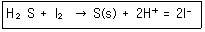
63. 유도결합 플라즈마 질량분석법에서의 방해작용이 아닌 것은?
64. 질량 분석법의 질량스펙트럼에서 알 수 있는 가장 유효한 정보는?
65. 기체크로마토그래피법에서 시료주입법에 대한 설명으로 가장 옳은 것은?
66. 열 분석법인 DTA(시차열법분석)와 DSC(시차주사열량법)에서 물리ㆍ화학적 변화로서 흡열 봉우리가 나타나지 않는 경우는?
67. 황산구리 수용액을 전기분해하면 음극에서는 구리가 석출되고, 양극에서는 산소가 발생한다. 0.5A의 전류로 1시간 동안 전기분해했을 때, 양극에서 발생하는 산소의 부피(mL)는 표준상태에서 약 얼마인가? (단, 두 전극의 반쪽반응은 다음과 같다.)
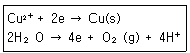
68. 전기량법은 전극에서 충분히 산화 및 환원반응이 일어나게 시간을 주는 방법으로, 이러한 방법 중 많은 양의 분석에 적당한 방법은?
69. 기체-고체 크로마토그래피(GSC)는 기체 크로마토그래피의 일종으로 이동상 기체를, 고정상으로는 고체를 사용하는 경우를 일컫는다. 이 때 이동상과 고정상 사이에서 분석물의 어떤 상호작용이 분리에 기여하는가?
70. 선택 인자(selectivity factor, α)의 변화요인으로 가장 거리가 먼 것은?
71. 질량분석법을 여러 가지 성분의 시료를 기체 상태로 이온화한 다음 자기장 혹은 전기장을 통해 각 이온을 질량/전하의 비에 따라 분리하여 질량스펙트럼을 얻는 방법이다. 질량분석기의 기기장치 중 진공으로 유지되어야 하는 부분이 아닌 것은?
72. 유기화합물의 혼합 용액을 기체 크로마토그래피로 분리하여 다음과 같은 데이터를 얻었다. 화합물의 머무름지수를 표시한 것 중 가장 거리가 먼 것은?
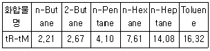
73. 길이 30.0cm의 분리관을 사용하여 용질 A와 B를 분석하였다. 용질 A와 B의 머무름 시간은 각각 13.40분과 16.40분이고 봉우리 너비(4τ)는 각각 1.25분과 1.38이었으며 머물지않는 화학종은 1.40분 만에 통과하였다. 선택인자(α)는 얼마인가?
74. Pt 산화전극을 사용하여 Fe2+를 전기량으로 적정하려고 한다. 이에 대한 설명으로 틀린 것은?
75. 금속 Zn 전극과 0.1M ZnCl2 수용액 그리고 Cl2와 0.1M HCl 및 탄소 막대 전극을 이용하여 다음과 같이 전지를 구성하였다. 이에 대한 설명으로 틀린 것은?
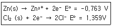
76. 기체 크로마토그래피 분리법에서 사용되는 운반 기체로 부적당한 것은?
77. 고성능액체크로마토그래피에서 분리효능을 높이기 위하여 사용하는 방법으로 극성이 다른 2~3가지 용매를 선택하여 그 조성을 연속적 혹은 단계적으로 변화하며 사용하는 방법은?
78. 크로마토그래피에서 관의 분리능을 향상시키기 위한 방법으로 가장 거리가 먼 것은?
79. 고체표면의 원소 성분을 정량하는데 주로 사용되는 원자 질량분석법은?
80. C, Cl 원자를 한 개씩 함유하는 화합물에서 M. M+1, M+2, M+3 봉우리들의 상대적 크기로 가장 타당한 것은? (단, M은 분자 봉우리를 나타내며, 동위원소 존재비는 Cl35:Cl37=75:25, C12:C13=99:1이다.)